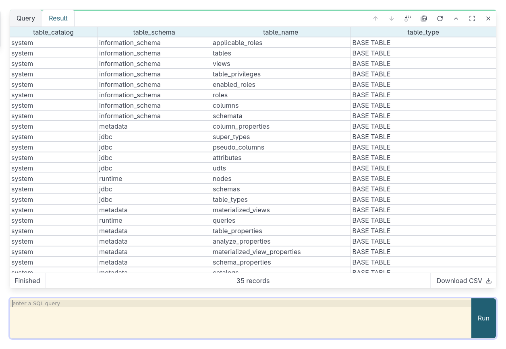
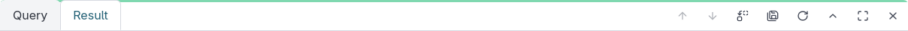
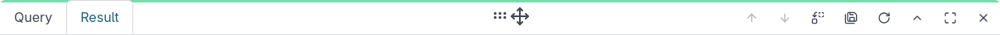

7 Query Notebook
EdgeSet provides a notebook interface for running SQL queries. You can also run queries using your favorite Presto-compatible client (see Clients).
7.1 The query box
The query box is the first thing you see when navigating to the “Query” menu in EdgeSet.
Enter your SQL query into the box and run the query by clicking Run or pressing Ctrl+Enter.
7.1.1 Notifications
Below the query box is a Notify checkbox. If selected, EdgeSet will send you a notification once data is available. How the notification is displayed depends on your web browser and operating system.
Note that the first time you click the Notify checkbox your web browser may prompt you to allow notifications from EdgeSet.
7.2 Query cards
Once you’ve run a query, a query card will appear for it in the notebook above the query box. The query card will show information about the query, whether EdgeSet has returned a result already or the query is still active or waiting.

In case of a result table, you can resize the columns of the table by dragging the top right part of a column in the header. Each column can be automatically resized to fit the column’s content by double clicking the same part top right part of the column header. The result table also supports toggleable viewers for JSON and Long text on the cell for ease of viewing those values.
You can also reload the results of a previously completed query or revise the query. Clicking the “edit” icon on a query card will load that query’s SQL into the query box (overwriting anything already in the box).
The controls on the query card allow you to move the card up and down or minimize or close them in the notebook. A drag handle is also provided at the top of the card to allow dragging the card to a desired location.


Edgeset supports exporting query results to CSV or TSV. At any point during the query’s lifetime you can select an export option (if the query has not started yet, an export and file download will be triggered automatically once the result becomes available).

Clicking the “close” (x) icon on a running query will cancel the query.
7.3 Large query results
EdgeSet is capable of handling very large query results. It does so by streaming the results from the query engine to your web browser and rendering only the results you’ve scrolled into view. Once EdgeSet has fetched enough results to display a table, the query engine will put the query into an idle state. If you scroll to the bottom of the results table, EdgeSet will fetch and display more rows.
7.3.1 Query timeouts
The query engine will only keep idle queries alive for 5 minutes before they will be terminated. If this happens and you try to load more results, EdgeSet will ask if you want to rerun the query.
7.4 Keyboard Shortcuts
7.4.1 Query cards
The notebook interface supports keyboard navigation and shortcuts to manage the queries and its results.
For instance, if a query card is focused, you can press Enter to focus on its result table and navigate across the cells using the up and down arrows keys. To restore focus back on the card, press Escape. If the card is focused, you can sequentially access the controls on the card using the tab key.

TabTo access the JSON viewer or the Long text viewer for a focused cell, you can press Enter and to close the viewer, press Escape.
If the query card is focused (that is, the focus is outside the result table), you can navigate through the list of query cards using the up and down arrows to switch focus on the queries above and below the current focused one.
7.4.2 Other shortcuts
Edgeset also supports the following keyboard shortcuts:
Ctrl+B- toggle the sidebarCtrl+/- focus the query editorCtrl+Shift+R- refresh the catalog